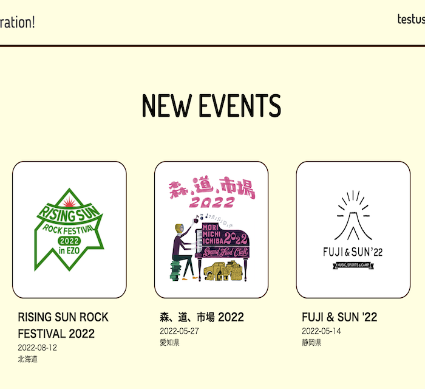
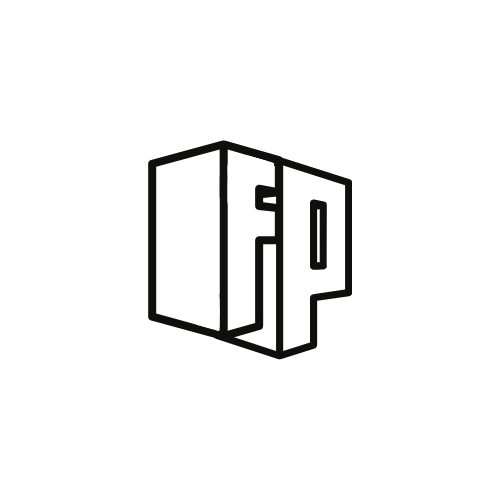

Fesparation!（フェス情報交換アプリ）

開発環境
Ruby / Ruby on Rails / MySQL / GitHub / Heroku / Visual Studio Code
-
概要
制作時間 55時間 URL https://fesparation.herokuapp.com/ ID fujita PASS 0424 -
動作テスト
テスト用アカウント
mail test1@gmail.com PASS test1111
OUTLINEアプリケーションの概要
オリジナルアプリケーションとして、音楽フェスの情報交換ができるアプリを開発しました。
一部機能は開発中ですが、主な機能はユーザー登録機能、マイページ機能、お気に入り機能、コメント機能です。
トップページには新着イベント情報とイベント検索フォームが表示されており、イベント情報をクリックすると詳細ページが閲覧できます。
また、イベント検索フォームではイベント名・開催地・開催月による検索ができ、検索結果は別ページに一覧表示されます。
全ユーザーはイベント検索およびイベント詳細とコメント閲覧が可能ですが、ユーザー登録をするとイベントへのコメント投稿とお気に入り登録が可能になります。 お気に入りに登録したイベントはマイページに一覧表示されます。
なお、管理者ユーザーのみイベント情報を投稿・編集・削除が可能です。
-
開発に至った経緯
自身の経験として、初めて参加するフェスでは会場の雰囲気や客層といったオフィシャルサイトにはない情報を集めるのに苦労したことがありました。
その経験から、今後フェスに行ってみたいという方や初めて行くフェスの雰囲気を知りたいという方からフェスの常連者まで、 全国各地のフェス情報を検索・閲覧でき、コメントで疑問を解消したりユーザー同士が交流できるアプリがあればと思い作成に至りました。
-
開発で工夫したこと
開発において一番工夫した点は、ビューの統一感です。
全体通して配色やフォントは3つ以内に抑え、ログインや投稿のフォームは規格を極力揃えることで、画面遷移時のユーザーストレスを軽減しました。
今後は、知人に実際に利用してもらい、ユーザーヒアリングを行いながら改善を行おうと考えています。
-
今後実装したいと思っていること
今後追加したい機能は複数ありますが、
・gemによる管理機能の拡張
現状はusersテーブルにadminカラムを追加し実装しているため機能が限られています。「rails_admin」や「cancancan」等のgemにより管理画面やより強固な管理機能に移行したいと考えています。・出演アーティスト情報追加機能
イベント投稿および編集時に出演アーティスト情報を追加しAppleMusicのリンクを表示させることに加え、検索フォームにてアーティスト検索ができるように実装したいと考えています。・コメント機能のルーム形式への変更
現状はコメントが同一画面に時系列順に並んでいるためコメントの関連性や会話の流れがわかり辛い状態です。ルーム形式にすることでルームタイトルで話題を判別でき、ユーザーが会話に参加しやすいようにしたいと考えています、・スマートフォン用へのレスポンシブ
ユーザー間の交流がある以上、メインデバイスであるスマートフォンへの対応は必須であると考えています。